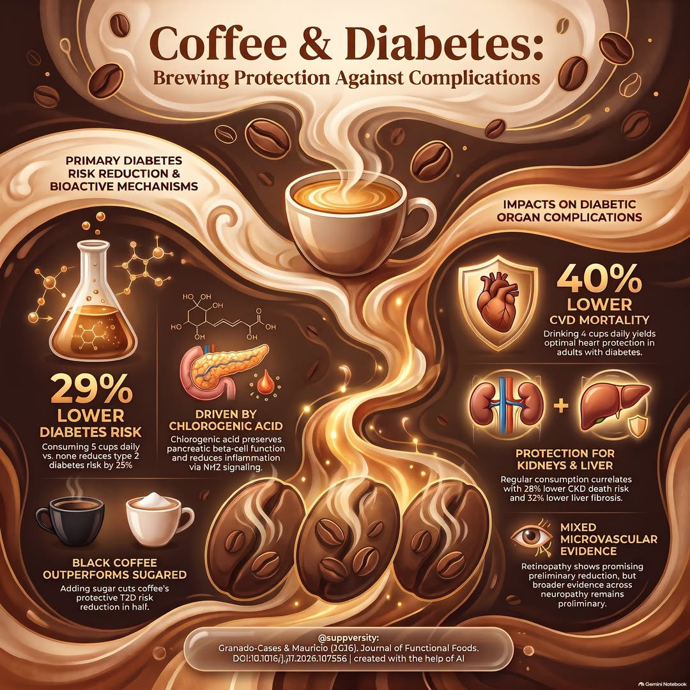

☕ Coffee: Your Daily 💁🏽♂️ Diabetes-Mitigation Ritual?
Coffee may be one of the most enjoyable functional beverages in the diabetes-prevention toolbox. A new review in the Journal of Functional Foods argues that regular coffee consumption—through #caffeine, #chlorogenicAcids, and other antioxidant compounds—may help mitigate the burden of diabetes and its complications, with potential relevance for ☝🏽 both type 1 and type 2 diabetes 😮
⚠️ And yes, full disclosure: I am not exactly impartial when it comes to #coffee. But this post relies strictly on the evidence reviewed by the authors of the paper—not on my deeply emotional relationship with my espresso machine. ☕
Coffee and diabetes risk
☕ Habitual coffee intake is linked to substantially lower type 2 diabetes risk. In the meta-analysis highlighted by the review, 5 cups/day versus none was associated with a 29% lower risk (RR 0.71; 95% CI 0.67-0.76); each additional daily cup was associated with a 6% lower risk (RR 0.94; 95% CI 0.93-0.95).
⚡ It is not merely the #caffeine. Each additional cup of caffeinated coffee was associated with a 7% lower risk (RR 0.93; 95% CI 0.90-0.96), while decaffeinated coffee showed a comparable 6% lower risk (RR 0.94; 95% CI 0.90-0.98).
So more helps more 🤔 I knew it (I did in fact, because that is a long-established result) - What I also know, though is that beyond 6 cups of coffee the data becomes murky, simply because few people exceed this intake 🤷🏽
The mechanism, ... if it's not merely #caffeine? It is...
🧪 Chlorogenic acid is the star polyphenol. Evidence from trials in impaired glucose tolerance and metabolic syndrome, plus animal work, suggests hypoglycemic effects, increased insulin secretion, and improvements in obesity-related insulin resistance.
but wait! ✋🏽 there's more 👇🏽
🫀 Coffee phytochemicals may support beta-cell function. The review notes that coffee compounds may help preserve pancreatic beta-cell function and improve metabolic control—relevant because beta-cell failure is central to type 2 diabetes progression.
And there should be less... less #sugar, and 🤔 fewer sweeteners?
Yeah, you read that right what you add to your coffee matters.
☕ In three large U.S. cohorts, each additional cup of black coffee was associated with a 10% lower type 2 diabetes risk (HR 0.90), but adding about a teaspoon of 🧁 sugar attenuated this to 5% (HR 0.95); artificial sweeteners showed a similar attenuation (other studies show no clear effect, though)
What about people who already have diabetes? Will coffee cure #T1DM or #T2DM, no but it may mitigate the collateral damage ☝🏽
Moderate intake looks cardioprotective. 🫀 In a meta-analysis of 82,270 people with type 2 diabetes, 4 cups/day was associated with a 21% lower all-cause mortality risk (HR 0.79), a 40% lower cardiovascular mortality risk (HR 0.60), a 32% lower coronary heart disease mortality risk (HR 0.68), and a 23% lower risk of total cardiovascular events (HR 0.77).
❤️ The sweet spot appears to be moderate, not maximal. A meta-analysis of 160,653 people found the lowest cardiovascular disease risk at 3.5 cups/day (RR 0.85; 95% CI 0.80-0.90), while 5 cups/day was not significantly protective (RR 0.95).
🧠 In non-smokers with type 2 diabetes, 2-4 cups/day was associated with an 18% lower cardiovascular disease risk (HR 0.82), a 27% lower myocardial infarction risk (HR 0.73), and a 32% lower heart-failure risk (HR 0.68).
In favor of the ☕+🌇 = #MORNINGJoe - no late night coffee for you!
🕐 Timing may matter. In UK Biobank data, coffee consumed between late morning and noon was associated with lower all-cause mortality (HR 0.80), cardiovascular mortality (HR 0.79), and heart-disease mortality (HR 0.70), whereas coffee from dawn to late morning was associated with higher risks.
🫘 Kidney signals are encouraging. Coffee intake of at least 2 cups/day was associated with a 14% lower chronic kidney disease risk (RR 0.86), an 18% lower end-stage kidney disease risk (HR 0.82), a 19% lower albuminuria risk (OR 0.81), and a 28% lower CKD-related death risk (HR 0.72).
👁️ Retinopathy evidence is mixed but intriguing. One cross-sectional study found that at least 2 cups/day was associated with a 47% lower odds of diabetic retinopathy (OR 0.53; 95% CI 0.28-0.99), while another found 65% lower odds in the highest caffeine quartile (OR 0.35).
🫁 Liver health may benefit too. Regular coffee drinkers had a 23% lower likelihood of developing MASLD (RR 0.77) and a 32% lower risk of liver fibrosis if they already had MASLD (RR 0.68).
Why the optimism is warranted ☝🏽
🧑🏽🔬👩🏽🔬👨🏽🔬 The reviewers highlight several biologically plausible mechanisms: chlorogenic acid and related polyphenols may
➕ reduce oxidative stress and inflammation,
➕ inhibit LDL oxidation,
➕ improve endothelial function, and
➕ exert antithrombotic effects.
In diabetic kidney disease models, chlorogenic acid activated the antioxidant Nrf2 pathway and inhibited the inflammatory NLRP3 inflammasome—two pathways closely tied to renal inflammation and fibrosis.
#coffee a health drink? ... ‼️
What makes coffee unusually interesting: it combines caffeine, chlorogenic acids, cafestol, kahweol, and other bioactive compounds rather than acting through one isolated molecule.
The honest caveats 🤷🏽
⚠️ This is a comprehensive review, not a randomized trial proving causation. The authors explicitly state that evidence on glycemic control and insulin sensitivity is contradictory, and that acute caffeine can increase insulin resistance.
⚠️ More is not automatically better. Unfiltered coffee and very high intake—more than 6 cups/day—were associated with higher total cholesterol, LDL cholesterol, and triglycerides; heavy intake has also been linked to adverse cardiovascular signals in some studies.
⚠️ Complication evidence remains incomplete. The authors judge the evidence for retinopathy, nephropathy, neuropathy, and MASLD to be inconclusive or limited, despite several promising associations.
⚠️ Preparation and additives are under-studied. The review specifically calls out the lack of comparisons between filtered, espresso, and instant coffee, and warns that added sugars may confound the results.
Bottom line 👨🏽🔬 If you already enjoy coffee, the reviewed evidence gives you reason to be cheerful: moderate, preferably unsweetened coffee fits neatly into a diabetes-risk-reducing dietary pattern and may also support cardiovascular, kidney, and liver health.
If you do not drink it (shame on 🫵🏽 YOU ), do not start chugging six cups before sunrise—moderation, sensible timing, and keeping the sugar out are the evidence-aligned approach.
@suppversity: Granado-Casas & Mauricio (2026). Effects of coffee consumption on the prevention and management of diabetic complications: a comprehensive scientific review. Journal of Functional Foods. DOI:10.1016/j.jff.2026.107556 [PMID: pending indexing]
